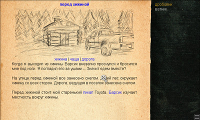
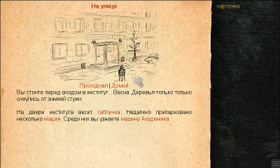
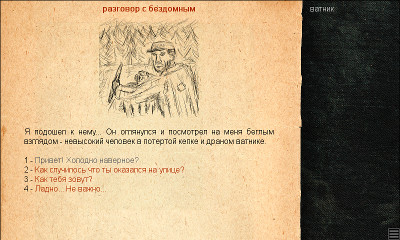
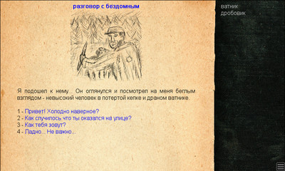

[ What is it? ] [ Screenshots ] [ Download ]
INSTEAD 1.0.4 — interpreter of simple text adventures
The interpreter of STEAD (Simple Text Adventures) allows to play games that combine visual novels, text adventures and classic quests of 1990-s. The STEAD games features are:
- very simple source code of the stories. (based on LUA);
- the ability to use graphical or textual (readline) game interface;
- graphic interface supports music and images;
- graphic interpreter theme support — a game may change the interface look;
- portability (originally written for Linux, depends on SDL and lua).
The graphic interpreter at work.




You can download the current version and INSTEAD games here: http://instead.googlecode.com/
Official game forum: http://instead.pinebrush.com/
[ What is it? ] [ Screenshots ] [ Download ]
(c)by Peter Kosyh, a.k.a. gl00my '2009 (gl00my(dog)mail.ru, jabber:gl00my@jabber.ru)